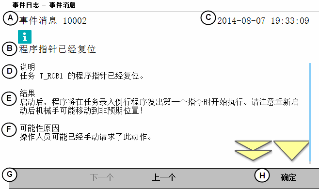

| 浏览和处理 FlexPendant - Main menu | ||
| Event Log（事件日志） | ||
| Event Log（事件日志） | 操作机器人系统时，现场通常没有工作人员。为方便排除故障，系统的记录功能会保存过去的事件信息，以供参考。 有关如何打开事件日志，请参阅访问事件日志。 | ||||||||||||||||
| 事件日志图示 | 下表简要概括了 事件日志。 | ||||||||||||||||
| 事件日志消息 | 每个事件日志项目不仅包含一条详细描述该事件的消息，而且通常还包含解决问题的建议。 
| ||||||||||||||||
| 日志相关信息 | 事件日志消息以及更多关于事件日志的信息，请参阅操作员手册 - IRC5故障排除。 |